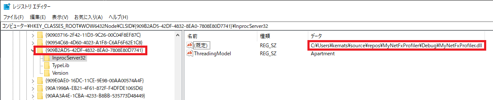
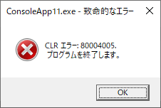

こんにちは、Japan Developer Support Core チームの松井です。
今回は、.NET Framework のプロファイル機能を利用する製品に起因する一般的な問題についてご案内します。
.NET Framework のプロファイル機能
.NET Framework では、.NET Framework 上で動作するアプリケーションの実行を監視するためのプログラム (プロファイラー) が利用するためのプロファイル API が提供されています。プロファイラーの開発者は、この API を利用してデバッグの支援や各種メトリクスの計測などの様々な機能をプロファイラー DLL として実装します。プロファイル機能を有効にしてプロファイラー DLL が登録されると、.NET Framework アプリケーションは共通言語ランタイムの初期化処理の過程でプロセスにプロファイラー DLL をロードします。.NET Framework は、アプリケーションの実行を通じて発生するガベージ コレクションや JIT コンパイルなどの様々なイベントがプロファイラー DLL へ通知し、プロファイラーによってその内容が利用されます。
プロファイル機能を有効にする方法
プロファイル機能は通常、COR_ENABLE_PROFILING と COR_PROFILER の 2 つの環境変数によって有効化されます。COR_ENABLE_PROFILING 環境変数を 1 に設定すると、プロファイル機能が有効になります。COR_PROFILER 環境変数には、プロファイラー DLL が実装するプロファイラーを指定します。プロファイル機能が有効化されプロファイラーが正常にロードされると、ソース .NET Runtime、ID 1022 の以下のようなメッセージがアプリケーションの起動時にイベント ログへ記録されます。
.NET Runtime version 4.0.30319.0 - プロファイラーが正常に読み込まれました。 プロファイラーの CLSID: ‘{909B2AD5-42DF-4832-8EA0-7808E80D7741}’。 プロセス ID (10 進数): 12860。 メッセージ ID: [0x2507]。
よくある問題
プロファイラー DLL はアプリケーションと同じプロセスにロードされる性質のため、アプリケーションの動作に影響を与えないよう注意深く設計する必要があります。例えばプロファイラーの処理の内部でアクセス違反例外が発生した場合、プロファイラーの動作に問題が生じるだけでなくアプリケーション自体が異常終了します。一般的にはプロファイラーはアプリケーションのデバッグやテストの過程で対象のプロセスに限定して有効化することがほとんどですが、システム レベルでプロファイラーを有効にすると .NET Framework を利用するアプリケーションに影響を与える可能性があります。サーバー マネージャーや PowerShell など Windows の機能も .NET Framework 上で動作するため、システム レベルで有効化したプロファイラーの影響で Windows の機能が起動できなくなるといった事象が起こりえます。
弊社へよくお問い合わせをいただく問題としては以下のようなものが挙げられます。
- イベント ログにソース .NET Runtime、イベント ID 1022 のエラーが頻繁に記録されるようになった。
- アプリケーションの開始時にエラーが発生して起動できなくなった。
- アプリケーションの実行中にエラーが発生して突然終了するようになった。
プロファイル機能は開発者用ツールやセキュリティ ソフトウェアなどから利用されるケースが多く、このようなアプリケーションの導入や更新などが契機で上記のような事象が発生する場合は、問題の切り分けを実施した上で当該製品の開発元へお問い合わせすることも検討してください。
プロファイラーによって発生する問題の切り分け
プロファイラーは下記 2 つの環境変数によって構成されるため、環境変数の設定を変更してプロファイラーを無効化し、問題の再現性に変化があるか確認することで問題の切り分けが可能です。プロファイラーを無効化したときには問題が発生しない場合、プロファイラーの動作が問題の原因の一つとなっていると考えられます。
- COR_ENABLE_PROFILING
- COR_PROFILER
COR_ENABLE_PROFILING
COR_ENABLE_PROFILING 環境変数はプロファイラーの機能を利用するかどうかを 0 (無効) または 1 (有効) で設定します。システム レベルでプロファイラーが有効となっている場合、ユーザー環境変数やシステム環境変数で COR_ENABLE_PROFILING が設定されていますので、環境変数の値を 0 に設定して問題が解消するかご確認ください。
COR_PROFILER
COR_PROFILER 環境変数の値はプロファイラーの識別子となっており、レジストリで識別子とプロファイラー DLL のパスが関連付けられています。COR_PROFILER 環境変数の値でレジストリを検索することで、問題を引き起こしているプロファイラー DLL を特定できる場合があります。例えば COR_PROFILER={909B2AD5-42DF-4832-8EA0-7808E80D7741} の場合は以下のキーにプロファイラー DLL のパスが設定されています。
\HKEY_CLASSES_ROOT\CLSID\{909B2AD5-42DF-4832-8EA0-7808E80D7741}\InprocServer32
\HKEY_CLASSES_ROOT\WOW6432Node\CLSID\{909B2AD5-42DF-4832-8EA0-7808E80D7741}\InprocServer32

なお、プロファイラー機能は弊社製品でも Visual Studio プロファイラーやコード カバレッジなど様々な機能で利用されていますが、システム レベルで永続的にプロファイラーを有効化することは通常ありません。
一般的なエラー内容
プロファイラーの設定や実装の問題に起因するエラーでよくお問い合わせいただくものとして、代表的なものをいくつか記載します。
CoCreateInstance 中に、プロファイラーを読み込めませんでした。(HRESULT: 0x80040154)
.NET Runtime version 4.0.30319.0 - CoCreateInstance 中に、プロファイラーを読み込めませんでした。 プロファイラーの CLSID: ‘{909B2AD5-42DF-4832-8EA0-7808E80D7741}’。 HRESULT: 0x80040154。 プロセス ID (10 進数): 24504。 メッセージ ID: [0x2504]。
0x80040154 は REGDB_E_CLASSNOTREG のエラー コードです。このコードがイベント ログに記録される場合、COR_ENABLE_PROFILING 環境変数でプロファイル機能が有効になっているにも関わらず、COR_PROFILER 環境変数に設定されている識別子がレジストリに登録されていないことを示しています。この場合、プロファイラー製品のインストールやアンインストール、更新に問題があり不完全な状態となっている可能性があります。
CoCreateInstance 中に、プロファイラーを読み込めませんでした。(HRESULT: 0x8007007e)
.NET Runtime version 4.0.30319.0 - CoCreateInstance 中に、プロファイラーを読み込めませんでした。 プロファイラーの CLSID: ‘{909B2AD5-42DF-4832-8EA0-7808E80D7741}’。 HRESULT: 0x8007007e。 プロセス ID (10 進数): 19528。 メッセージ ID: [0x2504]。
0x8007007e は ERROR_MOD_NOT_FOUND のエラー コードです。このエラーはレジストリに設定されているプロファイラー DLL が見つからなかった場合に発生し、この場合もプロファイラー製品のインストールやアンインストール、更新に問題があり不完全な状態となっている可能性があります。
COR_ENABLE_PROFILING は適切に設定されていましたが、COR_PROFILLER が適切に設定されていませんでした。
.NET Runtime version 4.0.30319.0 - プロファイラーを読み込めませんでした。 COR_ENABLE_PROFILING は適切に設定されていましたが、COR_PROFILER が適切に設定されていませんでした。 COR_PROFILER は、読み込むプロファイラーの CLSID に設定する必要があります。 プロセス ID (10 進数): 7852。 メッセージ ID: [0x2500]。
このエラーは、COR_ENABLE_PROFILING 環境変数が設定されプロファイラーが有効化されているにも関わらず、COR_PROFILER が設定されていないためプロファイラー DLL がロードできなかった場合にイベント ログに記録されます。プロファイラーの機能を提供しているアプリケーションのインストールや更新、設定の変更などに伴って、環境変数の設定に不整合が生じている可能性があります。
CLR エラー: 80040005. プログラムを終了します。
致命的なエラー
CLR エラー: 80004005. プログラムを終了します。

このエラーはイベント ログには記録されず、アプリケーション起動時にダイアログが表示されて開始できない状態になります。このエラーは、プロファイラー DLL がロードされた後の初期化処理中に致命的なエラーが発生してアプリケーションの起動が続行できない場合に表示されます。
なお、プロファイラー DLL がロードされた後にプロファイラーの処理で発生する問題は、イベント ログやダイアログには表示されず突然アプリケーションが強制終了するといった事象で顕在化する可能性があり、プロファイラーの影響か判断することが困難な場合があります。もしくは、.NET Runtime のイベント ログ ID 1023 (.NET ランタイムの内部エラー) として顕在化する場合もあります。
開発者ツールやセキュリティ ソフトウェアなどの導入が契機となり突然 .NET Framework アプリケーションに問題が生じるようになった場合や、イベント ID 1022 のイベント ログが記録されている場合は、プロファイラーの動作が影響している可能性が考えられます。そのような場合は、プロファイラーを無効化して問題の再現性に変化があるかご確認ください。また、プロファイラーの動作によって問題が生じている場合はプロファイラーの開発元へのお問い合わせをお願いします。
参考情報
.NET Framework のプロファイル API については以下のドキュメントで詳細な情報を公開しています。
https://docs.microsoft.com/ja-jp/dotnet/framework/unmanaged-api/profiling/
また、プロファイル API が活用されているツールとして CLR Profiler や PerfView がオープン ソースで公開されています。
https://github.com/microsoftarchive/clrprofiler
https://github.com/microsoft/perfview
プロファイラー内部で問題が起きたときの動作を簡単に試せる Visual Studio 2019 でビルド可能なサンプル コードをこちらに置いていますので、興味のある方はダウンロードして試してみてください。
本ブログの内容は弊社の公式見解として保証されるものではなく、開発・運用時の参考情報としてご活用いただくことを目的としています。もし公式な見解が必要な場合は、弊社ドキュメント (https://docs.microsoft.com や https://support.microsoft.com) をご参照いただくか、もしくは私共サポートまでお問い合わせください。